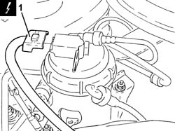
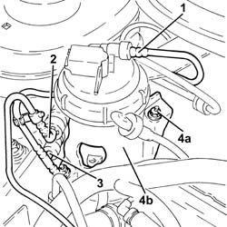
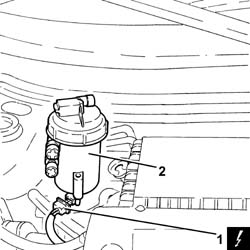

1044B10 fuel filter assembly - r + r or replace
- Path
- Procedures > 10 ENGINE UNIT > 1044 FUEL CIRCUIT PUMP/AND DEVICES > 1044B fuel filters > 1044B10 fuel filter assembly - r + r or replace
- Kind
- repair procedure (removal / refitting; the operation number is the code)
- Applies to
- engines: 1.3 JTD 16v; all production periods
- Interactive page
- https://sloeber94.github.io/elrnDB-fPnd/en/#/2752582
Applies to: engines: 1.3 JTD 16v; all production periods
 Removing
Removing
 Refitting
RefittingDisconnect the battery negative terminal.
Undo the fuel filler cap and remove it to discharge the pressure in the system.
1. Disconnect the electrical connection from the fuel pre-heating device.
 | Name | Connector |
|---|---|---|
1 | Fuel temperature sensor | K81 |

Applies to: engines: 1.3 JTD 16v; all production periods
1. Disconnect the quick-release connector for the fuel inlet pipe, fuel filter side.
2. Disconnect the rapid connector for the fuel supply pipe from the fuel filter to the pressure pump, fuel filter side.
3. Disconnect the rapid connector for the fuel return pipe, fuel filter side.
4. Undo the nuts (4a) and remove the collar (4b) fixing the fuel filter.

Applies to: engines: 1.3 JTD 16v; all production periods
1. Raise the fuel filter sufficiently to disconnect the electrical connection from the water presence sensor in the fuel filter.
| Name | Connector |
|---|---|---|
1 | Water in diesel filter sensor | K31 |
2. Remove the complete fuel filter.

Applies to: engines: 1.3 JTD 16v; all production periods
Refitting
RemovingConnect the electrical connection to the water-in-fuel filter presence sensor.
| Name | Connector |
|---|---|---|
- | Water in diesel filter sensor | K31 |
Place the fuel filter assembly in its housing.
Place the collar securing the fuel filter in its housing and fasten it using the nuts.
Connect the rapid connector for the fuel return pipe, fuel filter side.
Connect the rapid connector for the fuel supply pipe from the filter to the pressure pump, fuel filter side.
Connect the quick-release connector for the fuel inlet pipe, fuel filter side.
Connect the electrical connection to the fuel pre-heating device.
| Name | Connector |
|---|---|---|
- | Fuel temperature sensor | K81 |
Place the fuel filler pipe cap in its housing.
Connect the battery negative terminal.